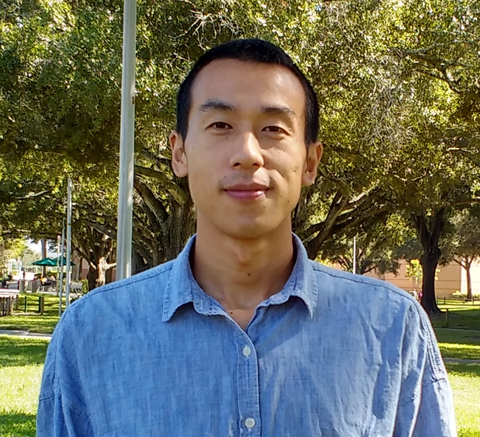

I am currently an Assistant Professor in the Department of Civil and Environmental Engineering at the University of Houston.
I received a B.E. degree in Geodesy and Geomatics Engineering in 2011 and a M.E. degree in Geodesy and Survey Engineering in 2014, both from Wuhan University.
In 2020, I completed a Ph.D. degree in Geology at the University of South Florida. Before joining the University of Houston, I was a Scripps Postdoctoral Scholar at the Scripps Institution of Oceanography, UC San Diego.
My research uses satellite, terrestrial, and marine geodetic techniques to investigate Earth’s topography and its deformation over time in critical zones, primarily applied to study of crustal deformation, coastal subsidence, and changes in the cryosphere.
In my spare time, I enjoy going for a hike with my wife and kids. I also like playing basketball and watching games.